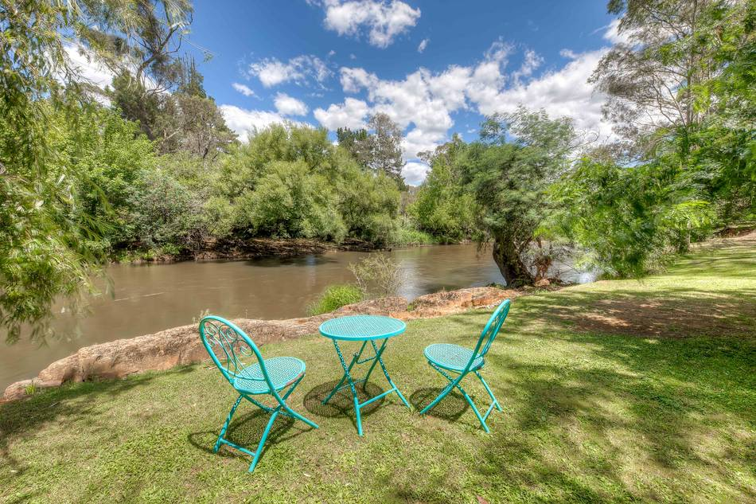
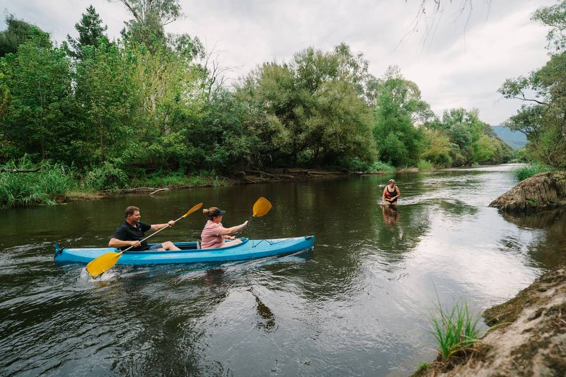
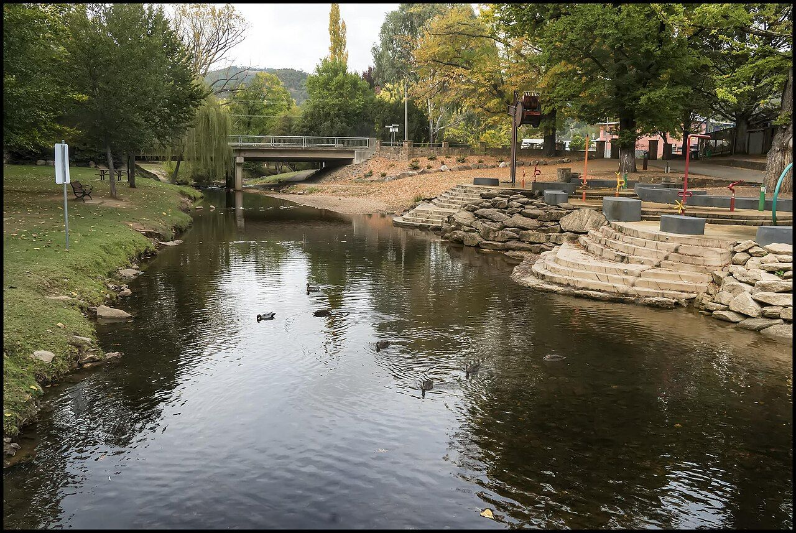

The Ovens River runs along the bottom of our lawns, and 200 metres of the bank is ours. In summer it's the first place most guests head, and the last place they leave.
What it's like
It's a natural mountain river, clear and cool, with a stony bed. In summer it's deep enough in the middle for adults to swim or drift along in a tube. At the edge it's shallow, so small children can paddle with a parent beside them.
The water comes down from the high country, so it stays fresh even on hot days. Most people get in, gasp, and then don't want to get out.


Getting in from here
Walk down the lawn from your cottage. There's no road to cross and nothing to pay. Pick a spot along the bank, spread out a towel, and ease in where the edge is gentle.
If you have a tube, a kayak or a paddleboard, bring it. You can launch from the lawn and drift along our stretch of the river. Make a day of it: the barbecues are free, and there's shade under the trees for the hottest part of the afternoon.

When to swim
December to February is swimming season. Late afternoon is lovely, when the sun is lower and the lawn is in shade. In spring the river often runs higher and colder, so it's better for looking at than getting into.

Other places to swim nearby
If you'd like a change, there are two council river pools close by. The Porepunkah River Pool at Riverside Park has a children's paddling pool nearby. In Bright, the river pool in Centenary Park sits next to the splash park, with lifeguards at set times over the summer holidays when the flags are up. Up on Mount Buffalo, Lake Catani is a cold, clear alpine lake for a summer swim.

Useful links
- Bright splash park and river pool, Alpine Shire Council, including water quality warnings
- Visit Bright: splash park and river pool, for lifeguard times
- Life Saving Victoria, for water safety advice


.jpg){kind=link}